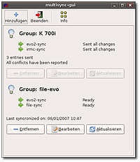

OpenSync
Archivierte Anleitung
Dieser Artikel wurde archiviert, da er - oder Teile daraus - nur noch unter einer älteren Ubuntu-Version nutzbar ist. Diese Anleitung wird vom Wiki-Team weder auf Richtigkeit überprüft noch anderweitig gepflegt. Zusätzlich wurde der Artikel für weitere Änderungen gesperrt.
Zum Verständnis dieses Artikels sind folgende Seiten hilfreich:
OpenSync  ist eine Software zum Datenaustausch und zur Synchronisation zwischen verschiedenen Geräten oder Programmen. Der Datenabgleich wird dabei über Plugins realisiert. OpenSync ist das Nachfolgeprojekt von Multisync; es stellt jedoch wesentlich mehr Plugins zur Verfügung und vereinheitlicht den Datenabgleich unter Linux, da es eine Vielzahl von Programmen unterstützt. Anwendungen, mit denen OpenSync arbeiten kann, sind z.B.:
ist eine Software zum Datenaustausch und zur Synchronisation zwischen verschiedenen Geräten oder Programmen. Der Datenabgleich wird dabei über Plugins realisiert. OpenSync ist das Nachfolgeprojekt von Multisync; es stellt jedoch wesentlich mehr Plugins zur Verfügung und vereinheitlicht den Datenabgleich unter Linux, da es eine Vielzahl von Programmen unterstützt. Anwendungen, mit denen OpenSync arbeiten kann, sind z.B.:
Synchronisationen sind zudem mit externen Geräten wie Palms oder Mobiltelefonen der unterschiedlichsten Anbieter möglich.
Gruppen¶
Um einen Datenabgleich durchführen zu können, muss zunächst eine sog. Gruppe (Group) angelegt werden. Diese Gruppe enthält die passenden Plugins (siehe unten) für die an der Synchronisation beteiligten Mitglieder. Der Name der Gruppe ist frei wählbar. Sinnvollerweise sollte man einen Namen wählen, der auf die beteiligten Programme hinweist.
Mitglieder¶
Die Gruppen-Mitglieder (Members) sind die Programme oder Geräte, deren Daten ausgetauscht/abgeglichen werden sollen. Sie werden in einer Gruppe zusammengefasst. In den allermeisten Fällen sind immer nur zwei Mitglieder beteiligt.
Plugins¶
Ein Plugin ist eine Schnittstelle, über die verschiedene Programme mit anderen Programmen kommunizieren können. Unter OpenSync repräsentieren die Plugins die einzelnen Mitglieder. Ein Plugin ist aber nicht zwangsläufig identisch mit einem Programm; es kann auch für eine ganze Klasse von Geräten stehen (die unter dem selben Betriebssystem laufen).
Achtung!
Das Programm OpenSync befindet sich noch in einer frühen Phase der Entwicklung und ist bei weitem noch nicht ausgereift. Daher empfiehlt es sich, vor jeder Verwendung eine Sicherungskopie von wichtigen Daten anzulegen.
Installation¶
Ubuntu-Paketquellen¶
Eigentlich genügt es, wenn neben dem Programm/der Bibliothek OpenSync nur noch die benötigten Plugins (siehe unten) installiert [1] werden. Der einfacheren Bedienung wegen sollte man jedoch auch eine geeignete grafische Oberfläche installieren. Die Pakete haben folgende Namen:
libopensync0 - Das eigentliche Programm
multisync0.90 (universe) - Grafische Oberfläche für GNOME (seit Ubuntu 10.10 nicht mehr in den Paketquellen enthalten)
kitchensync (universe) - Grafische Oberfläche für KDE (nur bis Ubunutu 9.04)
multisync-tools (universe) - Paket für die Nutzung per Kommandozeile
Wahl und Einrichtung der Plugins¶
Im folgenden Abschnitt werden alle für OpenSync verfügbaren Plugins aufgelistet und beschrieben. Diese müssen jedoch nicht alle installiert [1] werden. Es genügt, wenn man die richtigen Plugins für seine eigene Soft-/Hardware-Kombination auswählt. Findet sich hinter der Beschreibung der Link "(Einrichtung)", so existiert zu diesem Plugin eine separate Seite, die die Konfiguration beschreibt und außerdem eine Liste der unterstützten Geräte enthält.
Die Namen der Pakete aller Plugins von OpenSync für Ubuntu beginnen mit (lib)opensync-plugin-, gefolgt von der Bezeichnung einer Anwendung. Die Vorsilbe lib wird dabei nur bei den Paketbezeichnungen der o.g. Fremdquelle verwendet. Man muss natürlich immer das Plugin für das zum Datenabgleich verwendete Programm installieren. Wird Evolution verwendet, so muss man z.B. das Paket (lib)opensync-plugin-evolution(2) installieren [1]. Andere Plugins sind sogar immer für bestimmte Geräteklassen oder Protokolltypen nötig. Im Folgenden wird jeweils nur der letzte Teil der Bezeichnung genannt. Der vordere Teil (siehe oben) ist sowieso überall gleich.
file ist ein wichtiges Plugin von OpenSync. Es hat die Aufgabe, Datenbestände von beliebigen Programmen mit einer Datei im Dateisystem abzugleichen. Diese kann auch als Sicherungsdatei verwendet werden. (Einrichtung)
evolution2 dient zum Abgleich von Dateien mit dem Programm Evolution. (Einrichtung)
gpe wird für Geräte benötigt, die auf dem GPE Palmtop Environment basieren.
jescs ermöglicht den Datenabgleich mit dem Java System Calendar Server.
ldap wird für die Synchronisation mit einem LDAP-Server benötigt.
kdepim ist für KDE-Anwendungen wie KAddressBook oder KOrganizer die richtige Wahl. (Funktioniert neuerdings auch mit Kontact unter KDE4, getestet unter KDE 4.3.5)
opie erlaubt es, OPIE-basierte Geräte innerhalb des OpenSync-Rahmenwerks zu synchronisieren.
palm ist für Geräte gedacht, die mit Palm OS betrieben werden.
synce ist ein Plugin für die Synchronisation von Windows CE- und Windows-Mobile-Geräten. (Einrichtung)
gnokii ist ein Plugin für die Synchronisation mit (neueren?) Nokia-Mobiltelefonen.
syncml erlaubt die Verbindung von Mobiltelefonen mittels einer Netzwerkverbindung über OBEX oder HTTP. (Einrichtung)
Benutzung¶
OpenSync kann sowohl über die Kommandozeile als auch über eine grafische Oberfläche eingerichtet und benutzt werden. Im Prinzip laufen alle Synchronisationen genau nach dem gleichen Schema ab. Zunächst wird eine Gruppe erstellt. Anschließend werden die Mitglieder dieser Gruppe ausgewählt. Wichtig ist dazu die Wahl der passenden Plugins (s.o.) und deren korrekte Einrichtung.
Multisync-GUI¶
 Bei Multisync-GUI handelt es sich um eine einfache grafische Oberfläche für GNOME. Der Name ist an den Vorgänger von OpenSync, Multisync (Artikel archiviert), angelehnt. Auch die Funktionsweise ist ähnlich, jedoch kann OpenSync unter der neuen Oberfläche mit wesentlich mehr Hardware und Software zusammenarbeiten. Mit Multisync-GUI lassen sich bequem verschiedene Synchronisationsgruppen einrichten und verwalten.
Nach der Installation findet sich ein Eintrag im GNOME-Menü unter "Anwendungen -> Zubehör -> Multisync-gui".
Da sich das Programm noch in einer sehr frühen Version befindet, unterstützt es noch nicht die volle Funktionalität von Opensync und eignet sich bisher nur für einfache Aufgaben, welche jedoch den meisten Anwendern genügen sollten. Außerdem bietet es noch nicht zu allen Plugins ein grafisches Konfigurationsfenster, so dass man eventuell nicht um das Editieren von (einfachen) Konfigurationsdateien herum kommt.
Leider ist die Oberfläche bisher nur teilweise in deutscher Sprache, aber die Bedienung ist denkbar einfach. Über "Hinzufügen" legt man eine neue Gruppe an. Nun kann man über "Bearbeiten -> Add Member" die gewünschten Plugins zu der Gruppe hinzufügen. Markiert man nun eines der Plugins, so kann man es konfigurieren. Die erforderlichen Konfigurationen beschränken sich meist auf die Pfadanpassung. Mit dem Knopf "Aktualisieren" wird der Datenabgleich durchgeführt. Das Programm gibt während der Synchronisation entsprechende Meldungen aus.
Kommandozeile¶
Nachfolgend werden die wichtigsten Kommandos für die Steuerung über die Kommandozeile aufgeführt. Um das Programm und die Plugins einzurichten, öffnet man zunächst ein Terminal [3]. Hier kann man nun folgende Befehle benutzen:
Konfiguration¶
Um OpenSync benutzen zu können, muss man als erstes eine neue Gruppe anlegen. Der Befehl zum Anlegen einer Gruppe lautet:
msynctool --addgroup gruppenname
Nun müssen die Plugins für die beteiligten Mitglieder hinzugefügt werden. Um zu überprüfen, welche Plugins zu Verfügung stehen, gibt man folgenden Befehl ein
msynctool --listplugins
Um ein Plugin zur Gruppe hinzuzufügen, gibt man folgenden Befehl ein:
msynctool --addmember gruppenname pluginname
Sind die Plugins für die Mitglieder erst einmal angelegt, müssen sie noch konfiguriert werden. Dies geschieht mit folgendem Befehl:
msynctool --configure gruppenname 1
Die 1 steht für das erste Plugin. Um das zweite Plugin zu konfigurieren gibt man den gleichen Befehl mit einer 2 statt der 1 ein. Nach Eingabe des Befehls werden die Plugineinstellungen unter Ubuntu im Editor Nano geöffnet. Hier muss nun das Plugin konfiguriert werden.
Synchronisation¶
Erster Datenabgleich¶
Um die beiden Synchronisationspartner auf den gleichen Stand zu bringen, muss zunächst eine Synchronisation in eine Richtung durchgeführt werden. Dies bedeutet, dass bei Konflikten einer der beiden Partner den Vorrang erhält. Dieser Schritt ist notwendig, da OpenSync bisher bei gleich benannten Einträgen nicht weiß, welcher der Neueste ist. Später wird bei der Synchronisation der Daten der Zeitstempel verglichen, um Konflikte aufzulösen.
Um diese einseitige Synchronistation starten zu können, muss man zunächst einmal herausfinden welches Plugin welche Nummer hat. Dies erfolgt mit folgendem Befehl:
msynctool --showgroup gruppenname
Nun sucht man das Plugin heraus, das zunächst den Vorrang erhalten soll und führt dann folgenden Befehl aus:
msynctool --sync gruppenname --conflict plugin-nummer
plugin-nummer ist die Nummer des bevorrechtigten Plugins.
Nun sollen beide Synchronisationspartner auf dem gleichen Stand sein und die Log-Dateien mit den Zeitstempeln wurden angelegt
Probleme¶
Verbindung über Kabel¶
Es ist nicht möglich (bzw. nicht dokumentiert) wie man mit dem irmc-Plugin Telefone über ein Kabel am COM-Port des PC synchronisiert (z.B. Siemens S55). Hier bietet sich das Programm scmxx (in Paketquellen enthalten) an.
scmxx --info
zeigt Informationen über das Handy/Netz an.
Wenn man nur ein Backup seiner Kontakte machen will:
scmxx --get --out /home/user/Desktop/out.txt --pbook --mem vcf
speichert das Adressbuch auf dem Desktop von dem Benutzer user.

- Erstellt mit Inyoka
-
 2004 – 2017 ubuntuusers.de • Einige Rechte vorbehalten
2004 – 2017 ubuntuusers.de • Einige Rechte vorbehalten
Lizenz • Kontakt • Datenschutz • Impressum • Serverstatus -
Serverhousing gespendet von